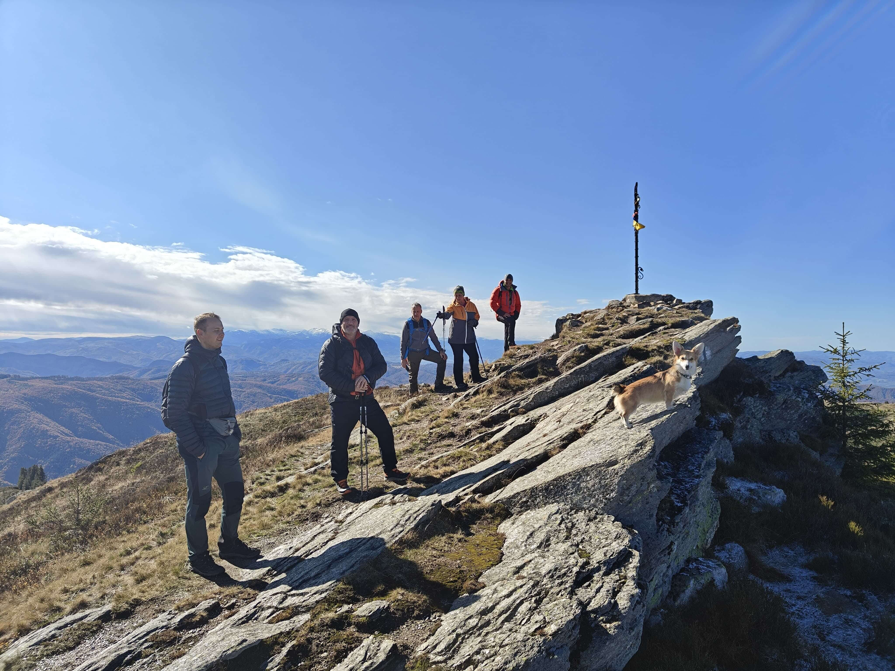

Lumina de aur care trezește coama muntelui la 1000m altitudine. O experiență pură de izolare și rânduială veche.
Mese festive cu produse bio, locale, pregătite la țest sau la gura sobei. Adevăratul gust al moștenirii noastre.
Momentul perfect pentru reconectare profundă în cadrul retreat-ului Metanoia. Liniște care se simte în suflet.

Drumeții ghidate și trasee neexplorate cu echipa Go Nomad. Descoperă secretele ascunse ale Țării Hațegului.